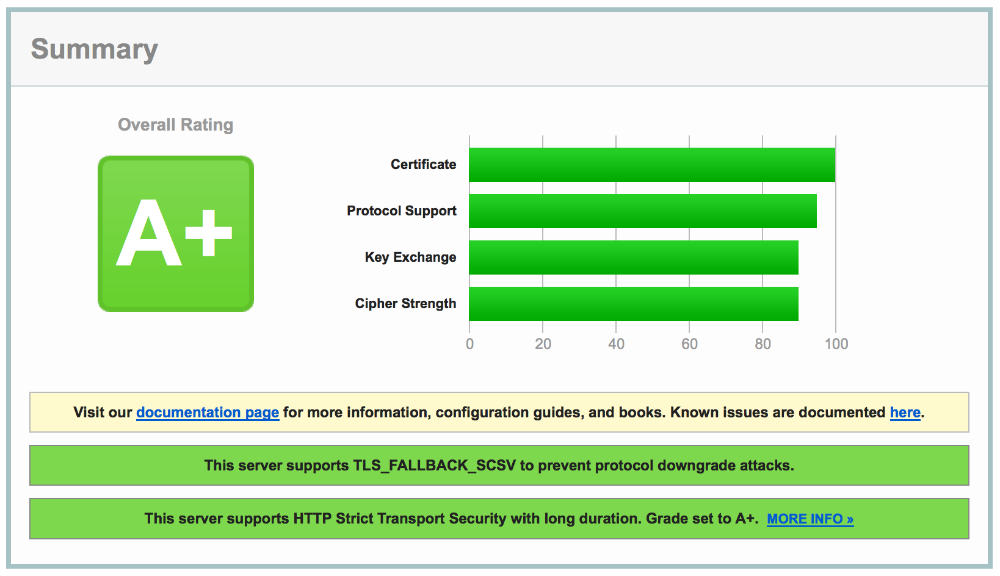
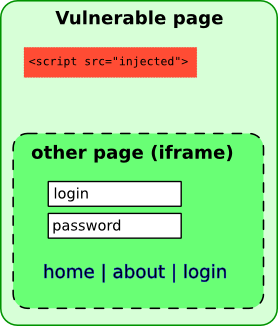
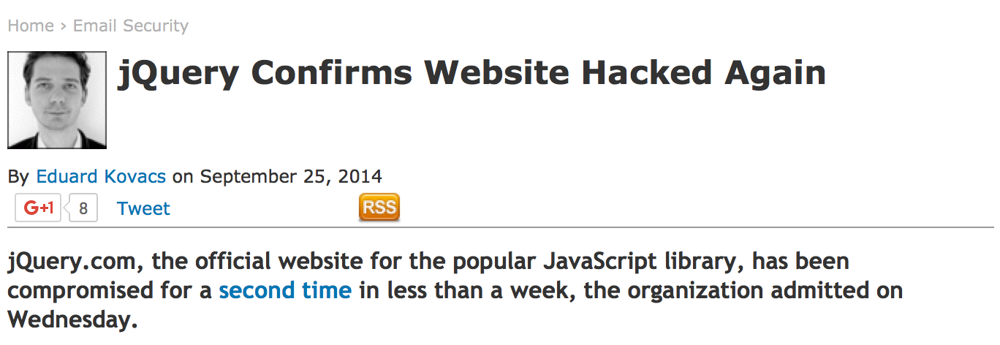
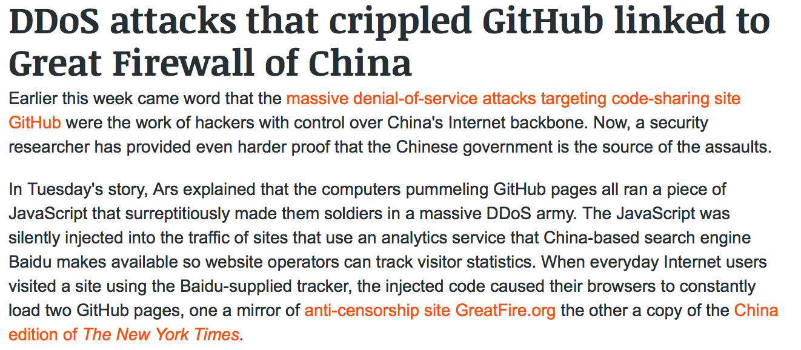
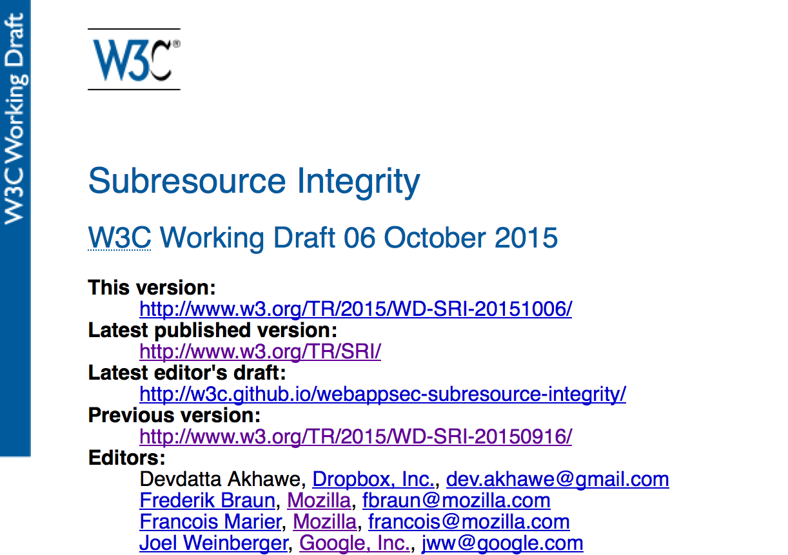

Subresource Integrity
GET /April%20King HTTP/1.1
Security Engineer
Mozilla Corporation
When most people think about internet security,
they think about this:
What about your seasoned security professional?

Content Delivery Networks (CDNs)
Who here has seen code like this?
<script src="https://code.jquery.com/jquery-2.1.4.min.js">
What does it do?
I'll get into that shortly, but first you must understand...
Same-Origin Policy
Same-Origin Policy
https:// www.mozilla.org :443
Executing code can do pretty much anything it wants on the same-origin, that is, as long as the scheme, hostname, and port number match.
Same-Origin Policy
<script src="https://code.jquery.com/jquery-2.1.4.min.js">
When you execute this code, you allow it to:
- Make XMLHTTPRequests
- Read all non-HttpOnly cookies
- Record every keystroke and form entry
- Request permissions to the camera, location, etc.
- And so much more! 😀
Same-Origin Policy
It could do something like @kkotowicz's XSS-Track...

... and create a full-page iframe of your site's login page, easily stealing a user's credentials on entry.

Or it could simply deface your fine website.
So what's the big deal?
 After all, you're obviously not loading code from Eve & Mallory's Discount JavaScript Emporium!
After all, you're obviously not loading code from Eve & Mallory's Discount JavaScript Emporium!

This is jQuery!
It's the #1 most trusted name in, err… jQuery-ing.
Whoops!

And it's not just a jQuery problem…
GitHub DDoS

If it's such a problem, why does anyone use this?
<script src="https://code.jquery.com/jquery-2.1.4.min.js">
- High performance, geolocated servers
- Smaller requests (no cookies, etc.)
- Already in the browser cache
- Automatically deployed bugfixes fixes
All of the A+ scores in the world won't help you if you source a script from a compromised source
So how can one protect themselves against a compromised CDN?
Subresource Integrity
to the rescue!
Subresource Integrity

SRI is a W3C standard that protects against remote resources being modified.
What does it look like?
First, generate a message digest (hash) of the known-good file in question:
Because of how cryptographic hash functions work, only this exact file could produce this would produce this hash. Even the slightest modification would result in a completely different hash.
Then, simply update your tags like so:
<script src="https://code.jquery.com/jquery-2.1.4.min.js" integrity="sha256-8WqyJLuWKRBVhxXIL1jBDD7SDxU936oZkCnxQbWwJVw=" crossorigin="anonymous">
integrity="sha256-8WqyJLuWKRBVhxXIL1jBDD7SDxU936oZkCnxQbWwJVw="
The integrity attribute tells the browser to not load the resource if it doesn't match the corrent hash.
crossorigin="anonymous"
And the crossorigin attribute tells your browser to access the resource anonymously, that is, without cookies.
SRI supports the use of multiple hash functions:
integrity="sha256-8WqyJLuWKRBVhxXIL1jBDD7SDxU936oZkCnxQbWwJVw=" integrity="sha384-R4/ztc4ZlRqWjqIuvf6RX5yb/v90qNGx6fS48N0tRxiGkqv…" integrity="sha512-Pcrh/26Yxk41hr4+sU3UhsUffU6fobj5pii+T7tqmrVi8x+bUOF…"
- Your browser picks a hash to use based on what it considers to be the strongest function
- If a hash function becomes broken, your code will still safely execute with an alternative (SHA-3?)
SRI also supports multiple valid hashes
for the same hash function:
integrity="sha256-8WqyJLuWKRBVhxXIL1jBDD7SDxU936oZkCnxQbWwJVw=" integrity="sha256-WcPSxGS3bNGjGRf+IUacL3pV4FDKghcLrO3Mz0pirl4=…" integrity="sha256-hfc4X3ktNhCJuFB8dnhZXAN155eQmiEesLLyuuI2/YQ=…"
- CDN serves up different library versions based on browser sniffing
- An upcoming release will replace the existing file, resulting in a different hash
Manual Recovery
<script>
window.jQuery || document.write('<script src="/jquery-2.1.4.js"><\/script>')
</script>
Simply detect to see if the library has loaded. If it hasn't, then load a locally hosted version.
Automatic Recovery
<script src="https://code.jquery.com/jquery-2.1.4.min.js" integrity="sha256-8WqyJLuWKRBVhxXIL1jBDD7SDxU936oZkCnxQbWwJVw=" crossorigin="anonymous" fallbacksrc="/jquery-2.1.4.min.js">
Note: this is not yet in the SRI specification!